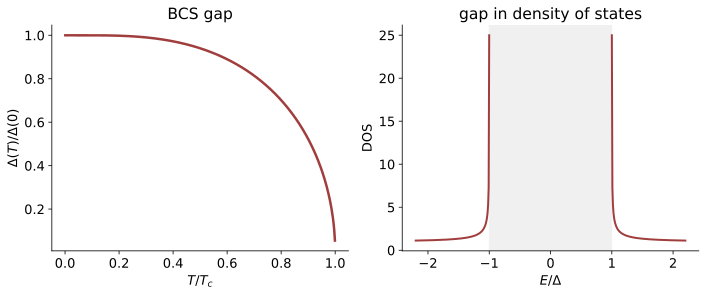

本页目录
凝聚态 II · 超导 BCS 理论
对标：Tinkham《Introduction to Superconductivity》/ Altland & Simons §6 / de Gennes ｜ 前置：cm-01、sm-03、asm-01（对称破缺/GL） 凝聚态最辉煌的定理级故事：电子居然结对（声子做媒的弱吸引 + Fermi 海托底 = 任意弱吸引都不稳定）→ 配对凝聚开能隙。BCS（1957）是"涌现"的旗舰案例，也是规范对称破缺（pp-02 Higgs）思想的凝聚态原产地；零电阻与 Meissner 是超导相的实验性质，不能仅由本页的能隙数值自动推出。

学习层：能隙方程到底解出了什么？
1. 先过预测门：临界点、普适比与谱峰
实验台先要求三个判断：在 \(T/T_c=0.95\) 时能隙是否仍为正？在 \(T\ge T_c\) 时是否还能保留正能隙根？比值 \(2\Delta_0/(k_BT_c)\) 接近 3.53 的前提是什么？预测对象是这个自洽模型的解，不是对某一种实验材料的自动诊断。
2. 固定模型：有限 Debye 壳层里的有限温方程
取 \(k_B=1\)，\(\lambda=N(0)V>0\)，常态单自旋 DOS 在 \(0\le\xi\le\omega_D\) 内近似常数；配对是平衡、各向同性 s 波，且只保留有限 Debye 截断。除去 \(\Delta=0\) 的边界情形，能隙由
自洽决定。数值上先用同一个固定求积计算积分，再用二分寻找正根。临界温度由正常态边界的方程
给出。\(\,T\ge T_c\,\) 时，\(F(0;T)\le0\)，实验台明确返回 \(\Delta=0\) 并标记“无正能隙根”，避免把临界边界的零点误当成另一个正解或制造 \(\Delta/\Delta_0\) 的 0/0。
无 JavaScript 时的静态读法：把 \(k_B=1\)、\(\lambda=0.30\)、\(\omega_D=1\) 代入上面的方程。有限截断的零温解为
而 \(T_c\) 解正常态方程。此组参数的静态核对值是 \(\Delta_0\approx0.071439\)、\(T_c\approx0.040450\)、\(2\Delta_0/T_c\approx3.53225\)。
| 静态核对 | \(T/T_c\) | \(\Delta(T)/\Delta_0\) | 积分残差 \(F=\lambda I-1\) | 解的状态 |
|---|---|---|---|---|
| 零温 | 0 | 1 | 约 0 | 正能隙 \(\Delta_0\) |
| 中温 | 0.50 | 0.95700 | 约 0 | 正能隙二分根 |
| 接近临界 | 0.95 | 0.38054 | 约 0 | 正能隙二分根 |
| 临界点 | 1.00 | 0 | 约 0 | 临界边界，不取正根 |
| 临界以上 | 1.10 | 0 | \(\approx-0.0286\) | 正常态，无正能隙根 |
准粒子 DOS 的静态表达式是
\(\Gamma=0\) 是理想曲线：\(E<\Delta\) 时为 0，在 \(E=\Delta\) 有平方根奇点；\(\Gamma>0\) 是 Dynes/数值展宽。以零温、\(\Gamma/\Delta_0=0.04\) 为例，\(E/\Delta_0=0,0.5,1,1.5,2\) 的理想 DOS 依次为 \(0,0,\infty,1.342,1.155\)，展宽后零能 DOS 约为 0.040、边缘约为 2.576。图上的纵轴会截断理想奇点，但模型函数保留其发散含义。
预测门答案：接近 \(T_c\) 时正能隙很小但仍为正；\(T\ge T_c\) 时只保留 \(\Delta=0\) 的正常态边界；3.53 只属于弱耦合、平衡、各向同性 s 波 BCS 极限，有限截断的数值比值只是接近它。
3. 理论审查：模型账本不能冒充材料结论
- 3.53 的适用域：\(2\Delta_0/(k_BT_c)\approx3.53\) 是弱耦合、平衡、各向同性 s 波 BCS 极限的结果；强耦合修正会改变它，不能说它对所有超导体“与材料无关”。
- DOS 的理想化：\(E=\Delta\) 的理想奇点会被准粒子寿命、有限温度卷积和仪器分辨率钝化；实验谱线的峰高不是本模型无展宽公式的直接数值。
- 实验判据分层：自洽能隙说明模型中有配对序参量和准粒子谱隙；能隙存在本身不等于已经证明零电阻，也不等于已经证明 Meissner 效应。
- 不要越界推广：这里不把弱耦合 BCS 方程推广到强耦合、非常规配对、高温超导或二维相位涨落；这些情形需要额外的微观机制、序参量结构或有限温涨落理论。
- 两本账分开：实验台的 \(\Delta(T)\)、残差、比值和 DOS 是模型的自洽解与数值诊断；真实材料结论还需要输运、磁响应、谱学和材料参数等独立证据。
1. 现象清单（理论要交的作业）
零电阻（\(T<T_c\)，超导环中电流可长期无衰减）；Meissner 效应（磁通被排斥——不是“理想导体”的推论而是独立现象，它才表明进入新的热力学相）；比热在 \(T_c\) 附近出现异常，并在完全开隙的弱耦合 s 波模型低温区呈指数抑制；同位素效应在最简声子弱耦合图景、其他参数近似不随质量变化时给出 \(T_c\propto M^{-1/2}\)。真实材料的同位素指数可以偏离 \(1/2\)，因此它是晶格参与的诊断线索，不是所有超导体必须满足的单一判据。这些都是独立实验账目，不能由一条能隙曲线代替。
2. Cooper 配对：Fermi 海上的不稳定性
吸引从哪来【机理】：电子极化晶格、留下正电尾迹，吸引后来者——延迟的间接吸引。能标为声子频率 \(\omega_D\)（solid-01），在 Fermi 面附近的窄壳层内胜过屏蔽后的库仑斥力。
Cooper 问题【完整推导】：在填满的 Fermi 海之上放两个电子（动量 \(\mathbf k,-\mathbf k\)，自旋单态），壳层 \(\omega_D\) 内有常吸引 \(-V\)。设波函数 \(\psi=\sum_k a_k|\mathbf k,-\mathbf k\rangle\)，薛定谔方程给
两边除以 \((2\xi_k-E)\) 并对 \(k\) 求和，消去公因子得自洽条件
令 \(E=-E_b<0\)，有限截断积分给出
结论惊人：任意弱的吸引都产生束缚态。三维自由空间做不到这一点——是 Fermi 海的态密度托底改变了问题的维数性质（Pauli 阻塞把二体问题变成"有底座的"二维型问题）。
\(e^{-1/x}\) 的非微扰性：它对 \(V\) 的一切阶泰勒展开皆为零——微扰论永远看不见超导（🔗 qft-02 §4 失效清单的凝聚态名例）。
3. BCS 基态与能隙方程
变分波函数：
所有动量对“要么空、要么成对”的相干叠加。这个 grand-canonical 平均场 ansatz 不具有确定粒子数；有限体系可以做粒子数投影，而自发相位选择是在热力学极限的平均场语言中出现。它不是说孤立有限样品真的丢失了电荷守恒。
平均场解耦 + Bogoliubov 变换【推导骨架】：定义 \(\Delta = V\sum_k\langle c_{-k\downarrow}c_{k\uparrow}\rangle\)，哈密顿量被对角化为准粒子形式，准粒子能谱
准粒子 = 电子与空穴的相干叠加（cm-01 准粒子概念的极致）。自洽条件即能隙方程：
在上述有限截断模型中的三条产出：
- 零温隙：\(\Delta_0 = \hbar\omega_D/\sinh[1/N(0)V]\simeq2\hbar\omega_D e^{-1/N(0)V}\)（弱耦合时才可使用右侧近似）；
- 临界温度：\(T_c\) 由 \(1/N(0)V=\int_0^{\omega_D}d\xi\,\tanh[\xi/(2k_BT_c)]/\xi\) 数值解出；在弱耦合且 \(\omega_D\gg k_BT_c\) 时才有 \(k_BT_c\simeq1.14\,\hbar\omega_D e^{-1/N(0)V}\)，两式相除才趋于
这个 3.53 不是无条件的材料常数：它只是在弱耦合、平衡、各向同性 s 波 BCS 极限中的普适极限；有限截断、强耦合或非常规序参量都会改变讨论。
- Fermi 面全面开隙 → 在这个模型中得到比热的指数律与隧道谱的能隙指纹；真实材料是否同时表现零电阻、Meissner 效应或同位素效应，需要独立实验检验。
4. 对称破缺读法：与 pp-02 的会师
BCS 平均场在热力学极限选择粒子数全局 \(U(1)\) 相位，序参量 \(\Delta=|\Delta|e^{i\varphi}\)——这是 asm-01 的 Ginzburg–Landau 理论的微观兑现（GL 可由 BCS 在 \(T\to T_c\) 附近导出，Gor'kov）。这里的“破缺”是可观测序参量的平均场/热力学极限说法；电磁局域规范变换是描述冗余，不能把它本身当作一个直接可观测量声称被破坏。
这里的对称破缺和能隙是平均场模型的理论语言；即使某个谱学拟合显示出能隙，也不能单凭它宣称样品已经证明零电阻或 Meissner。强耦合、非常规、高温超导和二维相位涨落不由本页的弱耦合方程覆盖。
Meissner 效应的 Anderson–Higgs 读法：相位模与电磁场耦合，使介质中的横向电磁响应出现有效质量尺度，静磁场因而指数屏蔽。最简 London 模型给 \(\lambda_L=\sqrt{m/(\mu_0n_s e^2)}\)；这里的 \(n_s\) 是超流刚度对应的有效载流子密度，真实材料还会有能带、温度和非局域修正。
这就是 Anderson–Higgs 机制的凝聚态原型——粒子物理的 Higgs（pp-02）是同一机制的真空版本。
宏观量子效应：
- 磁通量子化 \(\Phi_0 = h/2e\)——那个 2 就是配对的直接实验签名；
- Josephson 效应：\(I = I_c\sin\Delta\varphi\)，两超导体间的相位差直接驱动电流。SQUID 磁强计与超导量子比特（🔗 qi 线的主流硬件）都建立在它之上——量子计算机建在 BCS 之上。
类型 I / II：由 GL 参数 \(\kappa=\lambda/\xi\) 区分。\(\kappa>1/\sqrt2\) 的第二类超导体允许磁通线（涡旋）穿入，这才使高场超导磁体成为可能（MRI、加速器、托卡马克，🔗 fl-06）。
5. 练习与要点
例 1（非微扰指数的手感） \(N(0)V=0.3\)：\(\Delta_0\sim2\hbar\omega_D e^{-3.3}\)。取 \(\omega_D\sim300\) K 得 \(\Delta\sim\) meV、\(T_c\sim10\) K 的弱耦合数量级。指数说明在固定声子能标和弱耦合下 \(T_c\) 会被强烈压低，不是声子机制的普适温度上限：强耦合、轻元素的高频声子、压力和材料电子结构都会改变估计，不能由这行公式推出“高温超导必然不是声子机制”。
例 2（弱耦合比作诊断线索） 实测 \(2\Delta_0/k_BT_c\)：Al 约 3.4、Pb 约 4.4。前者接近弱耦合 BCS，后者的偏离与强耦合修正（Eliashberg）一致；但单个比值还会受各向异性、多能隙和谱拟合口径影响，不能独自完成材料分类。
例 3（磁通量子的日常） \(\Phi_0=h/2e\approx2.07\times10^{-15}\) Wb。SQUID 以它为刻度测量脑磁场（fT 量级）——"配对电荷 \(2e\)"每天在医院被数出来。\(\blacksquare\)
下一门：粒子物理两页——把"对称性决定相互作用"推到极致：规范原理、标准模型的粒子谱与 Higgs 机制。